For boats and their owners
02.2020-06.2020
Keywords: ScrumBan, remote data collection, digital teamwork.
Technical Keywords: Android Studio, Kotlin, XML, API, Zoom, Figma, Miro, Google Forms.
In the spring of 2020, I and 5 fellow students created Fimafeng - an app for mapping the oceans movements (high and low tide). Through
user surveys, continuous testing, and programming, we created an app designed to assist boat users and owners
at sea and on land. It provided clear information and alerts about significant changes in tides. We received an
honorable mention for the best app idea from the Norwegian Meteorological Institute.
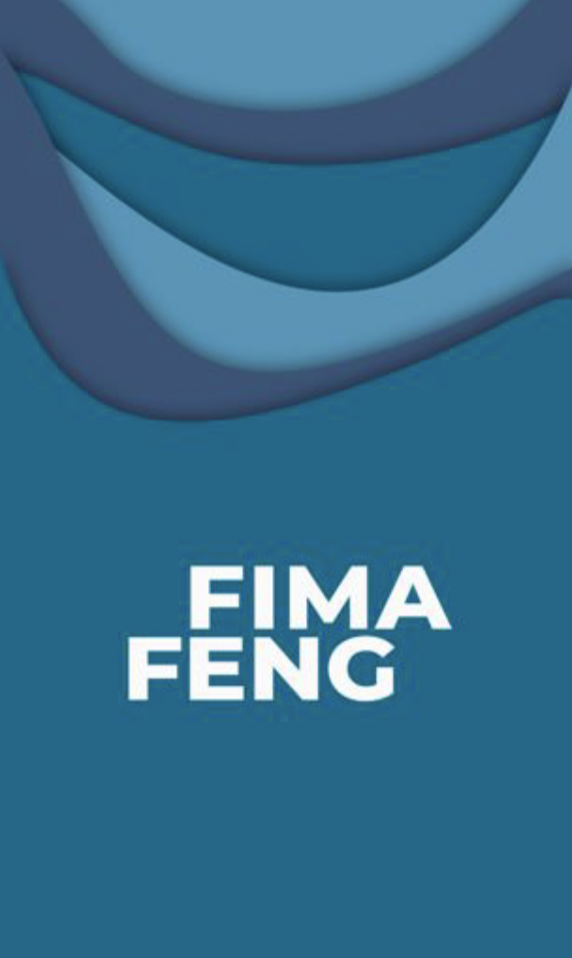
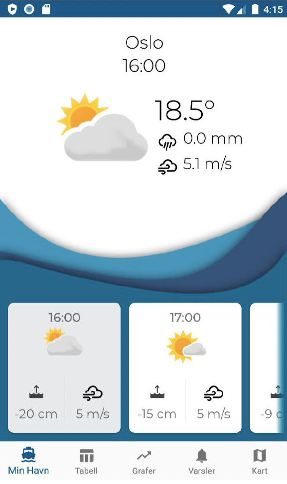
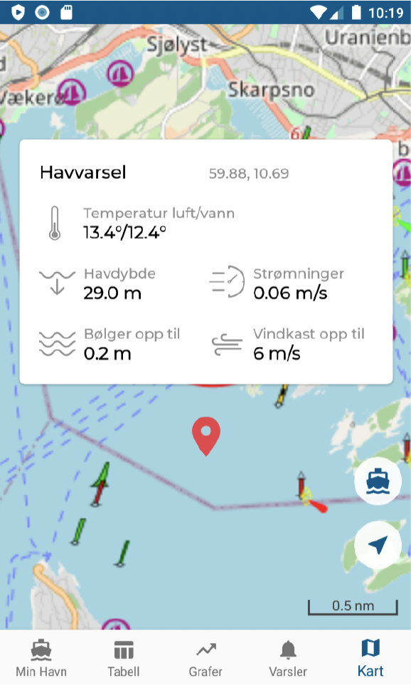
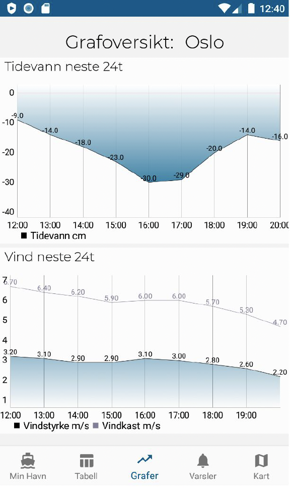
Process
This project was my first encounter with agile development. Our team came from 4 different study disciplines. We
conducted the process digitally, as the whole world was in a Corona lockdown. The process was carried out using
ScrumBan, with a retrospective approach to user surveys, requirements, and modeling.
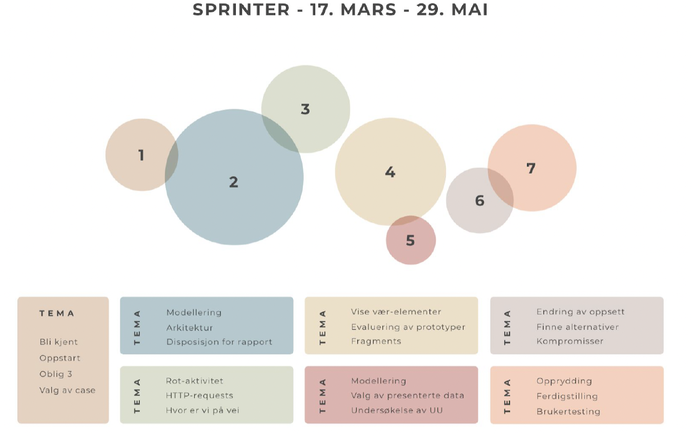
Through user surveys and document analysis, we identified the needs for security and information gathering within our
user group. Our requirements were developed based on this and possible operational solutions.
We used use case models to understand how we could use the APIs
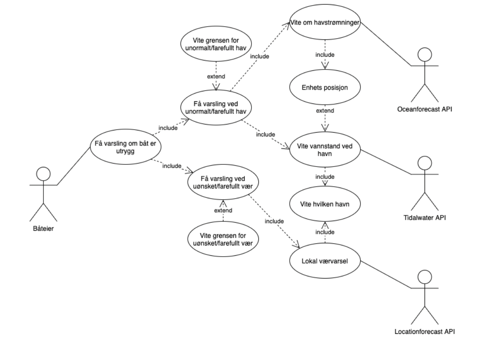
Design Process
In this project, there were two designers. During the Scrum intervals, we worked on data collection, analysis of
the data material, and clarification of requirements. Data collection and testing were conducted through surveys and
interviews. At the beginning of the process, we focused more on data collection, and towards
the end, our focus shiftet towards requirements, aesthetic design, and user testing.
Challenges & Lessons Learned
I experienced that the structure of ScrumBan helps unfamiliar people get to know each other and provides form and
structure to digital collaboration. Structure keeps the process on track and helps us resolve any disagreements that
arise.
We resolved a significant disagreement through a joint meeting, resulting in a commitment to clearer
communication and slightly less role differentiation. We were supposed to deliver a product together, and we decided
that our ideas should be discussed collectively. However, the distinction between designer and developer, and vice
versa, didn't need to be as significant as we initially determined in our project.
Towards a more sustainable Makerspace
02.2021-06.2021
Key words: Transition design, Makerspace, sustainability, upcycling, concept development, participatory design.
Technical key words: Zoom, Figma, Miro.
Links: Project third year –
University of Oslo: Élan: project homepage
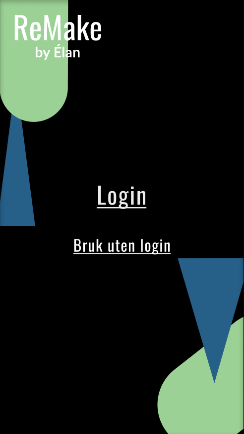
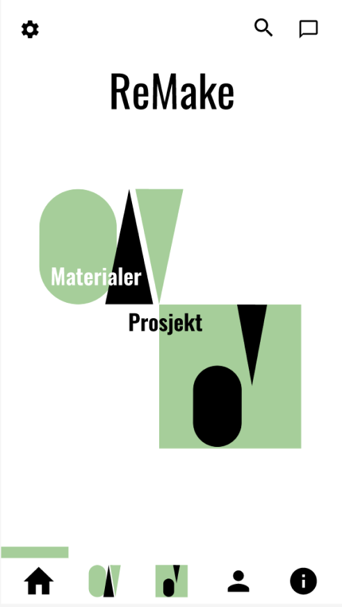
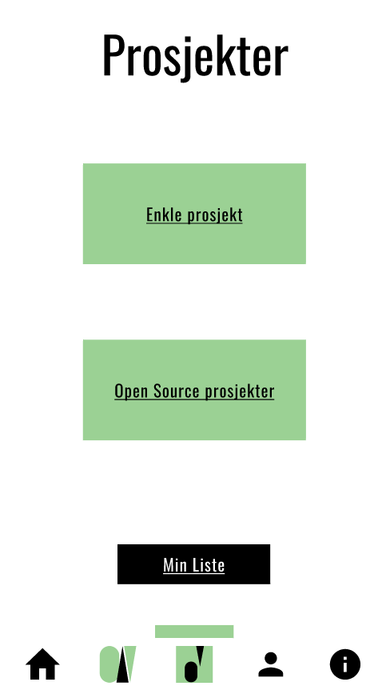
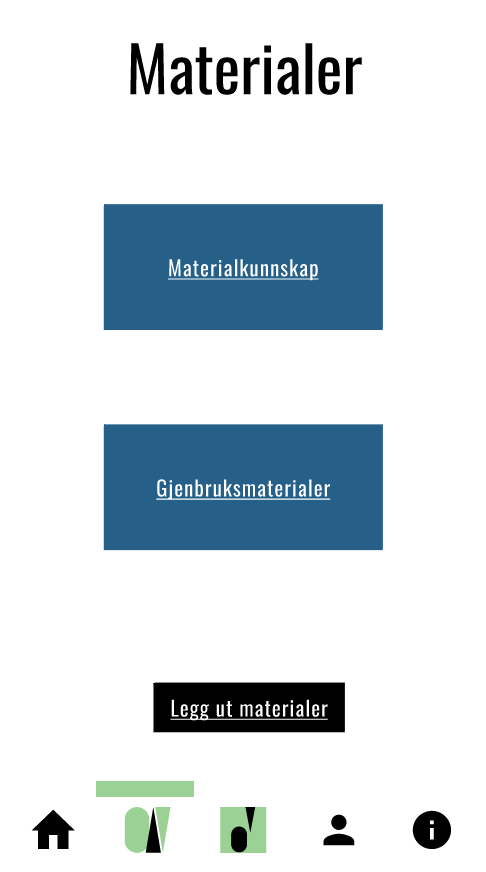
In the spring of 2021, I and 2 fellow students created ReMake - an app concept for material and project access. The
project aimed to reduce material overconsumption by increasing local expertise and production. We had the following problem
statement:
How can creative projects at Elvebakken Makerspace facilitate socialization and promote conscious
upcycling?
Our concept solution illustrated in the short, medium, and long term:
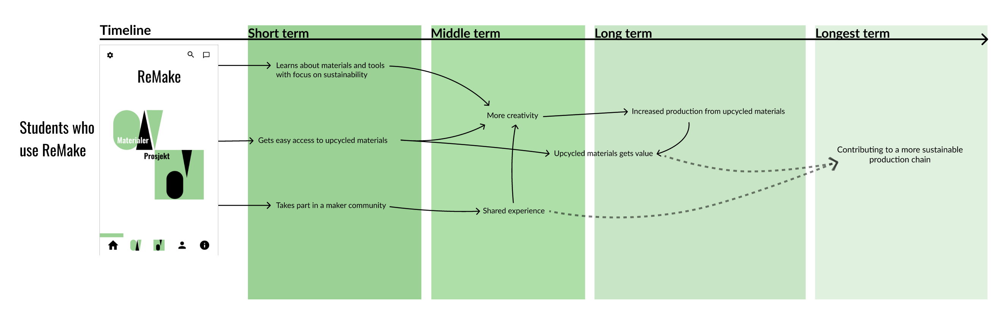
Process
The project was conducted in iterations, with the Transition Design framework as a guideline. It has the following
main focuses: Visions of transition, Specify user needs, Produce design solutions, and Evaluate design solutions.
We combined this framework with the classic user oriented process. This way, sustainability and user concerns became a combined focus.
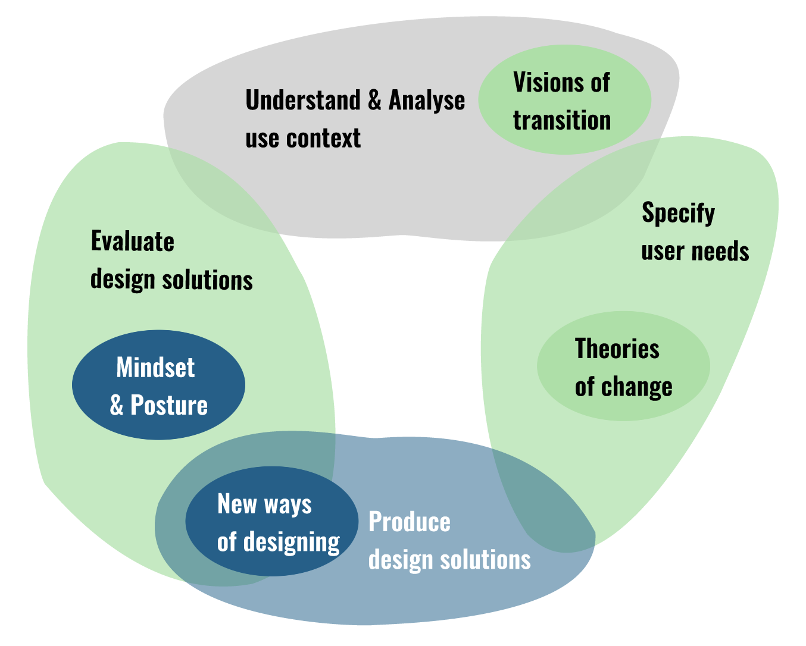
Through participatory design, we identified the following needs. We conducted the workshops on Zoom, using Miro Boards
as interaction tool for collaborative ideation processes. Each iteration had different focus areas.
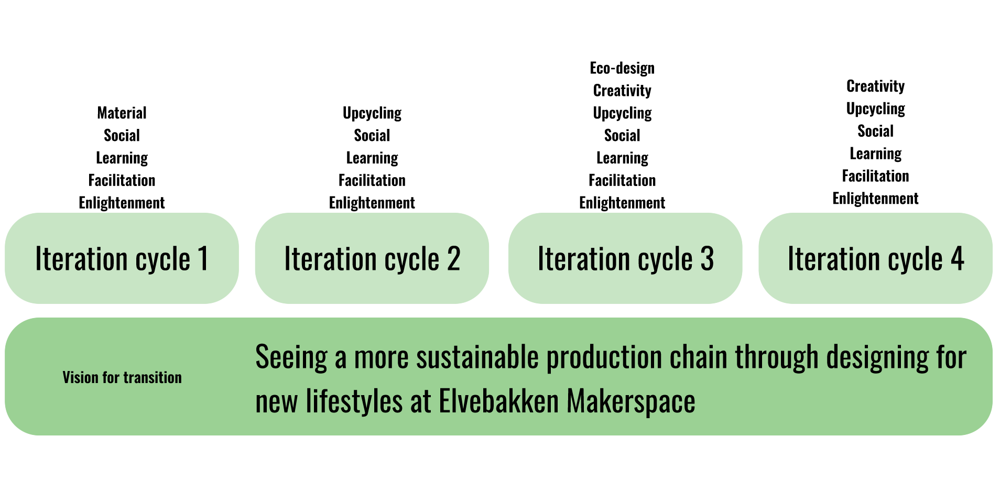
Challenges & Lessons Learned
This project provided me with more insight into how system theory can be used to understand design influence to the
society. The Transition Design framework is meant to be used to push society in a more sustainable direction through design. Design creates change, and we experienced this firsthand. Our biggest eureka moment
was that even a participatory design process creates change, because our participants became more aware and changed their habits through the design
process.
Tactile interaction at The Vikingship Museum
02.2019-06.2019
Key words: User centered design, museum, kill-your-darlings, tactile design.
Technical key words: Arduino, Processing, sensor-programmering.
Link: Project first year – University of Oslo: HVASS
In the spring of 2019, I and four fellow students created a prototype for a tactile sound shower at the Viking Ship
Museum. We addressed the following research question:
Can we influence the experience of exhibition objects at the Viking Ship Museum by facilitating the use of multiple
senses?
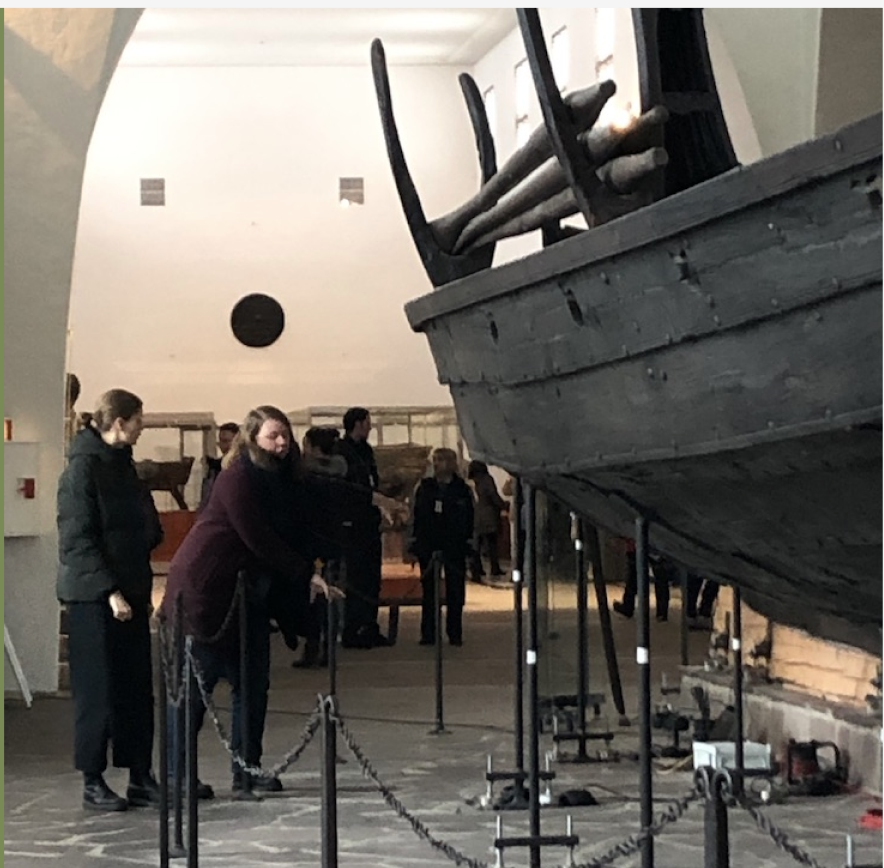
Midlun is intended to be a stationary system in front of an exhibition object at the Viking Ship Museum. Midlun
consists of a hemisphere covered in synthetic leather. When you stand underneath Midlun, you will hear Viking-themed
music. You feel wind on your face, and if you look up, you will see a starry sky. On each side, there is a braided
wire. These are two capacitive sensors that function as an "on"/"off" button. If you press "on", a narrator's voice
will start telling you about the object you are standing in front of.
Midlun takes you back to the Viking Age by stimulating multiple senses simultaneously: hearing, sight, tactility, and spatial awareness. It provides a
sense of belonging by being able to be used by up to 3 people at the same time, and fulfills the need for
self-realization by allowing you to decide to get more information about the object you are facing. Midlun
influences the experience of an exhibition object at the Viking Ship Museum by enabling the user to engage multiple
senses.
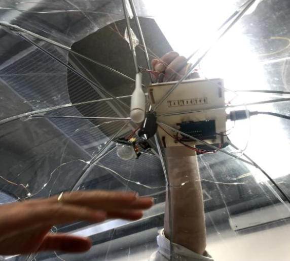
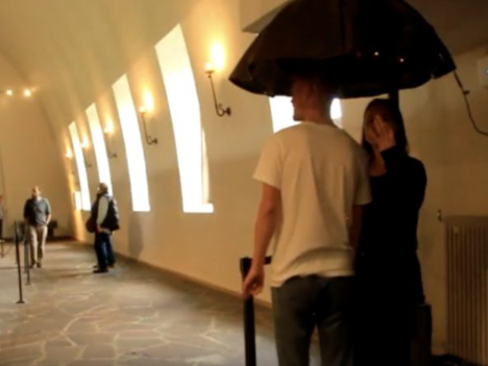
Process
We worked with a user-oriented design process. We contacted and collaborated with experts at the Viking Ship Museum
while also talking with curator-professors from the University of Oslo. Our target audience was young people between
20-30 years old. We held focus groups, interviews, and tested prototypes with the target audience. The evaluations
we conducted followed the prototypes' degree of fidelity.
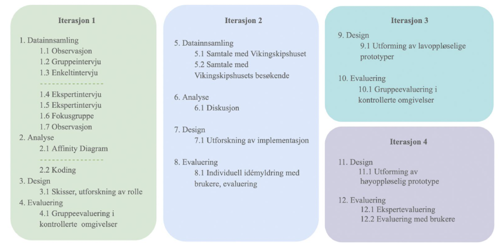
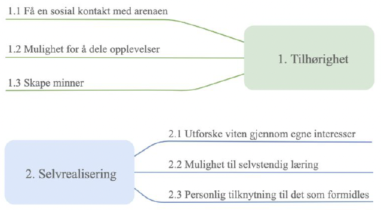
Challenges & Lessons learned
This project was my first user oriented design project. The opportunities within this design framework are extensive.
Halfway through the project, we had a great need to change direction in the design of the product that we had
initially envisioned. This gave us good experience in letting ourselves be guided by the data and its findings,
rather than assuming what the target audience actually needs.